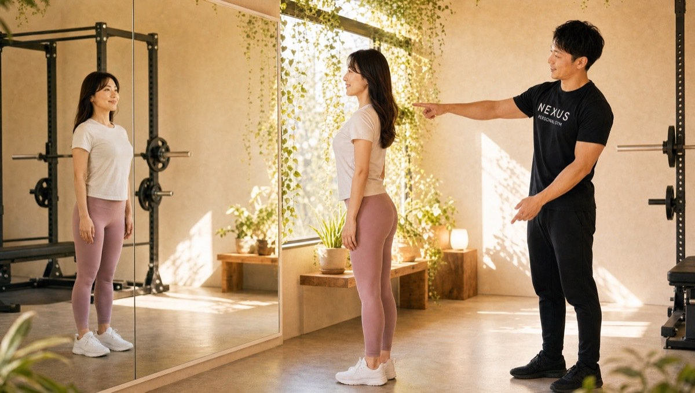
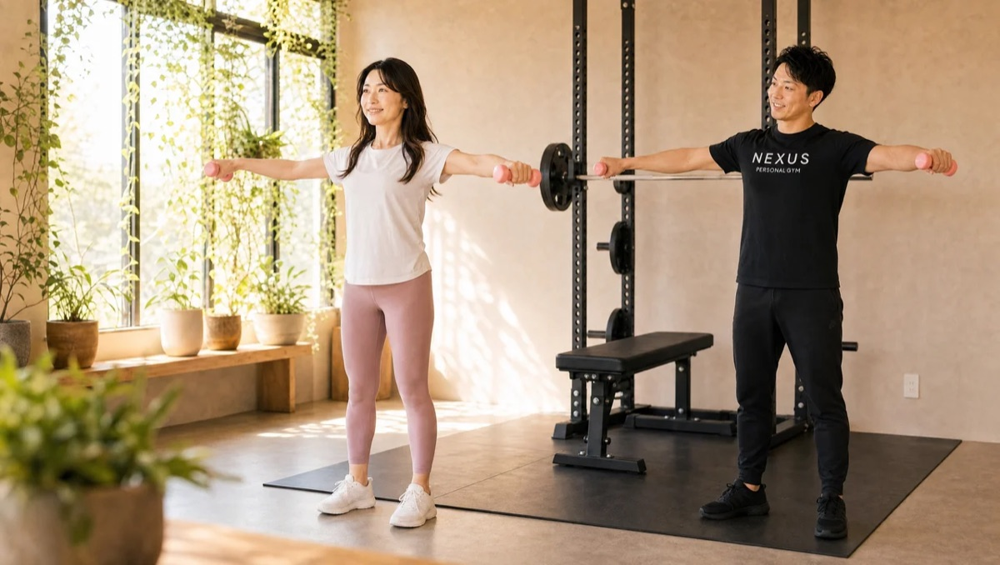
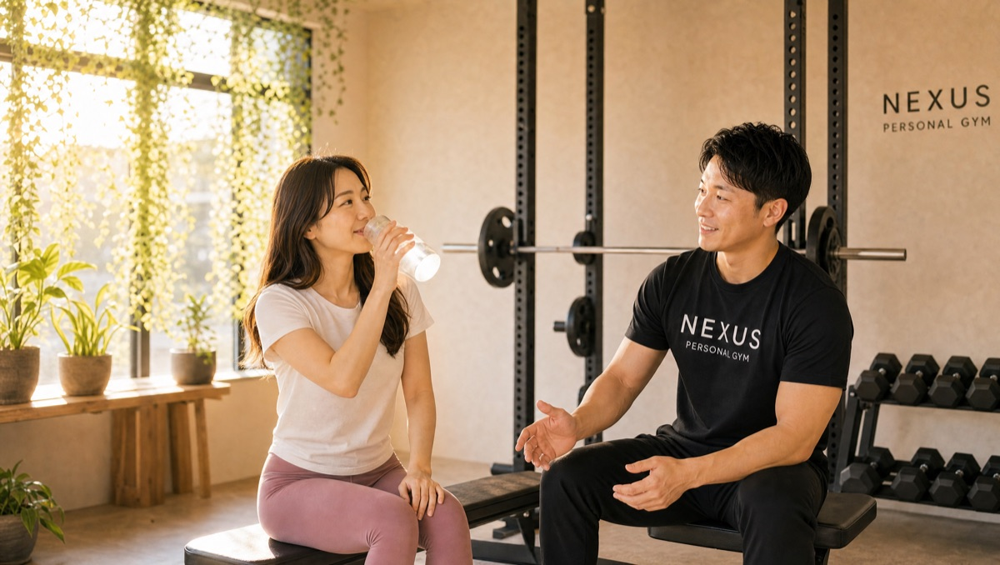

NEXUS Personal Gym ／ 東京都大田区
NEXUSパーソナルジム 久が原店｜ゴルフの飛距離を取り戻す完全個室ジム

東急池上線・久が原駅から徒歩2分、完全個室の隠れ家パーソナルジムです。「飛距離が落ちてきた」——そんなゴルファーの悩みに、スイングに必要な体幹・下半身の強化と、肩甲骨まわりの可動域を広げるトレーニングで応えるのが久が原店の考え方。ゴルファーのトレーニングに詳しいトレーナーが担当します。もちろん、健康診断の数字やお腹まわりが気になる大人の身体づくりにも対応。毎日8:00〜23:00・手ぶらOK・LINE予約で、ラウンド前も残業後も無理なく通えます。
- 完全個室
- 池上線・久が原駅すぐ
- ゴルファーの身体づくりに強い
- 手ぶら通いOK
- 毎日8:00〜23:00
この店舗の特徴
NEXUS久が原店は、東急池上線・久が原駅から徒歩2分の場所に佇む完全個室のパーソナルジム。久が原・田園調布エリアはゴルフを楽しむ大人が多く暮らす街で、久が原店はその土地柄に合わせて「ゴルファーの身体づくり」に強みを持っています。スイングに必要な体幹・下半身の強化と、飛距離に直結する肩甲骨まわりの可動域を広げるトレーニングを中心に、一人ひとりのスイングの悩みに合わせて設計。ゴルファーのトレーニングに詳しいトレーナーが担当します。もちろん、健康診断の数字が気になり始めた30代・40代の身体づくりや、お腹まわり・体型の変化にもしっかり対応。解剖学に基づく的確な指導で、狙った部位に確実に効かせます。ウェア・タオル・ドリンク・プロテインまで無料提供の手ぶら通いOK、予約はLINEでサッと完結。ラウンド前に寄れる駅近立地も好評です。
飛距離を取り戻す、体幹と肩甲骨

ゴルフの飛距離が落ちてくる原因は、単純な筋力低下だけではありません。体幹の安定性が落ち、肩甲骨まわりの可動域が狭くなることで、スイングの捻転が浅くなり、飛距離のベースそのものが下がってしまうのです。久が原店では、スイングに必要な体幹・下半身の強化と、肩甲骨の可動域を広げるトレーニングを組み合わせて、飛距離のベースを立て直します。会員からは「飛距離の低下が悩みで体幹を鍛え直しに入会し、3ヶ月でスイングが変わった」という声をいただいています。ゴルファーのトレーニングに詳しいトレーナーが担当し、あなたのスイングの悩みに合わせて設計。久が原駅から徒歩2分なので、ラウンド前に寄って身体を整えることもできます。
飛距離の低下が悩みで、体幹を鍛え直そうと入会しました。スイングに必要な体幹・下半身の強化と、肩甲骨の可動域を広げるトレーニングを中心に組んでもらい、3ヶ月でスイングが変わりました。ラウンド前に寄れる立地も便利です。
自己流筋トレの限界を超える

「自分でウェイトトレーニングをしてきたけれど、なかなか思うように身体が変わらない」——そんな独学の限界を感じている方こそ、久が原店の指導が効きます。会員からは「独学のウェイトトレーニングに限界を感じていたが、解剖学に基づく的確な指導で狙った部位に効かせられるようになり、逆三角形の背中に近づいている」という声をいただいています。同じ種目でも、フォームや効かせ方が少し違うだけで、鍛えられる部位はまったく変わります。解剖学に基づいて「どこに、どう効かせるか」を一つひとつ確認しながら進めるので、これまでの努力が正しく結果に変わっていきます。ゴルフのためのパワーづくりにも、見た目の変化にも直結します。
独学のウェイトトレーニングに限界を感じていました。解剖学に基づいた的確な指導のおかげで、狙った部位に効かせられるようになり、逆三角形の背中に近づいています。自己流では気づけなかったことばかりです。
健康診断の数字も、お腹まわりも
久が原店に通うのは、ゴルファーだけではありません。「30代で健康診断の結果が年々悪化し、お腹の脂肪が気になって入会した」「40代で、半年通ったら下腹がぺたんこになり、若返ったと言われた」——そんな大人の身体づくりの声も多くいただいています。年齢を重ねると、これまでと同じ生活をしていても、健康診断の数字や体型はじわじわ変わっていきます。久が原店では、トレーニングに加えて月額3,000円（税込）のAI食事指導を組み合わせ、無理を強いない範囲でお腹まわりと健康の数字にアプローチ。写真を送るだけで食べ方をサポートするので、忙しい毎日でも続けられます。身体が変われば、疲れにくさや見た目の若さも後からついてきます。
40代になり、体型の変化と疲れやすさを感じて入会しました。半年で下腹が平らになり、周りから「若返った」と言われるように。健康診断の数字も気にしていたので、食事まで見てもらえるのが心強いです。
久が原駅から徒歩2分。残業後でも

続けるうえで、立地は思っている以上に大切です。久が原店は東急池上線・久が原駅から徒歩2分。会員からも「残業のあとでも通える駅近が助かる」という声をいただいています。毎日8:00〜23:00の営業なので、朝のラウンド前にひと汗流すのも、仕事を終えてから立ち寄るのも自由自在。ウェア・タオル・ドリンク・プロテインまで無料提供なので、手ぶらでOK。仕事帰りにバッグひとつで寄れます。予約・変更はLINEで完結し、6時間前まで無料でキャンセル可能。急な残業やゴルフの予定にも合わせやすい設計です。
池上線3店舗の使い分け
NEXUSは、東急池上線沿線に複数の店舗を構えています。久が原店のほかに、雪が谷大塚店と石川台店も同じ池上線沿線。いずれも完全個室・手ぶらOK・毎日8:00〜23:00で、料金プランも全店共通です。会員カードは店舗をまたいで使えるわけではありませんが、生活動線や予約状況に合わせて「今日はこっちの駅」と選べるのは、沿線に店舗が集まっているエリアならでは。自宅の最寄り・職場の最寄り・ゴルフ練習場の帰り道など、あなたの動線にいちばん馴染む店舗を選んでください。まずは久が原店の無料体験で、雰囲気を確かめていただくのがおすすめです。雪が谷大塚店のページを見る
まずは無料体験から
初回は60分程度の無料体験。カウンセリングで目標や生活リズム、ゴルフの悩みをうかがい、姿勢チェックと実際のトレーニングまで体験できます。「飛距離を取り戻したい」「独学の筋トレに限界を感じている」「健康診断の数字が気になる」——どんな入り口でも大歓迎です。無料体験の当日にご入会いただくと、入会金が通常55,000円→15,000円（税込）に割引されます。無理な勧誘は一切ありません。まずは話だけでも、気軽に来てください。予約はLINEからサッとどうぞ。
料金プラン
入会金は通常55,000円、無料体験当日入会で15,000円（税込）に割引。全店舗共通の料金です。
アクセス
- 店舗名
- NEXUSパーソナルジム 久が原店
- 住所
- 〒145-0074
東京都大田区東嶺町27-10 フラットK202 - 最寄り駅
- 東急池上線 久が原駅 徒歩2分
- 営業時間
- 毎日 8:00〜23:00
- 電話番号
- 050-1790-8487
Googleマップの口コミ
出典：Google マップ
NEXUS久が原店はGoogle口コミ★4.9・82件。ゴルフの飛距離を取り戻す体幹・可動域トレーニングと、解剖学に基づく的確な指導が評価されています。
ゴルフの飛距離低下に悩んで入会しました。体幹・下半身と肩甲骨の可動域を鍛えるトレーニングを中心に組んでもらい、3ヶ月でスイングが変わりました。ゴルファーの身体づくりに詳しく、安心して任せられます。
独学の筋トレに限界を感じていましたが、解剖学ベースの的確な指導で狙った部位に効かせられるようになりました。自己流では絶対に気づけなかったことを丁寧に教えてもらえます。
40代で体型の変化と疲れやすさを感じて入会。半年で下腹が平らになり、「若返った」と言われるようになりました。健康診断の数字も気になっていたので、食事まで見てもらえて助かっています。
久が原店のよくある質問
Q久が原でゴルフのための身体づくりができるジムはありますか？+
Qゴルフの飛距離が落ちてきました。筋トレで戻りますか？+
Q健康診断の結果が気になります。相談できますか？+
よくある質問（全店共通）
料金・制度などNEXUS全店に共通するご質問です。さらに詳しくは110問のFAQをご覧ください。
Q料金はいくらですか？+
Q手ぶらで通えますか？+
Qキャンセルはいつまでできますか？+
Q食事指導はありますか？+
Qトレーナーはどんな人ですか？+
Q女性会員は多いですか？+
Q体験の流れは？+
NEXUSパーソナルジムの特徴・料金をもっと見る